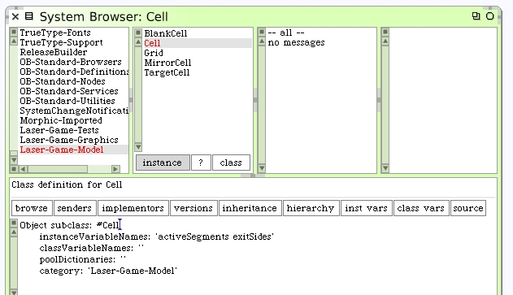
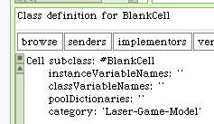
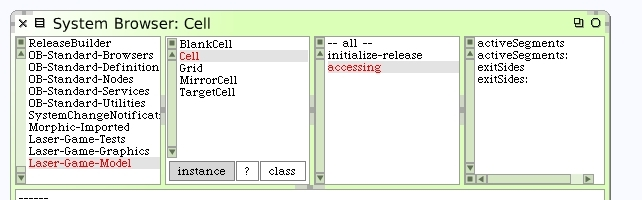
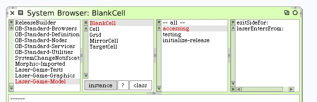
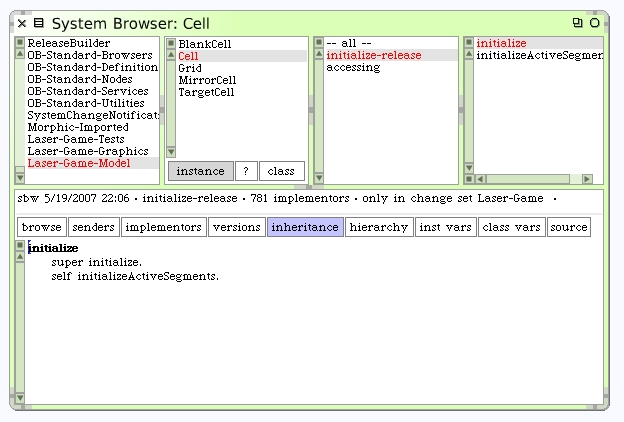
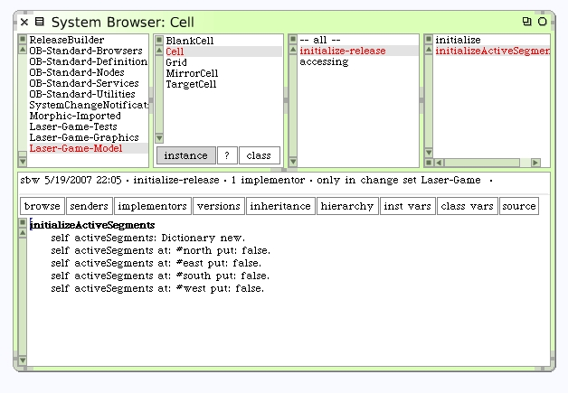
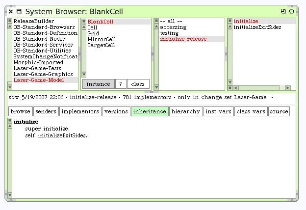
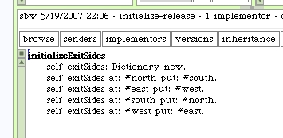

Abstract Class Cell
This was all straight-forward. But what about the behavior that is similar to the Blank Cell? We'll need the same instance variables "activeSegments" and "exitSides". The behavior of how these values are set will be different. We want to re-use the code as much as possible. This is a good case for an abstract class that would define what the two cells have in common. Let's create an abstract class called Cell.
Our next step is to move BlankCell under our new abstract class Cell. We should remove the two instance variables from BlankCell.
The accessors also need to be moved up to the new abstract class. There's a built-in tool in Squeak that will copy methods up and down a class hierarchy. However there is no tool to move the methods. The 3rd-party tool Refactoring Browser provides this capability and is a very powerful package to install for Squeak. However we do not currently have this installed and will proceed without it.
The accessors #activeSegments #activeSegments: #exitSides #exitSides: need to be moved to the new class. Also, the initialize methods need to be integrated into the new class. For a direct and simple situation like this, the easiest technique is to simply copy the code for these methods between the two classes by copy-and-paste and then delete them from the BlankCell class. I find this task easy to do if you open up 2 browsers. One for each class.
Here is a view of the class browser for Cell showing the names of the accessor methods that have been moved up from BlankCell.
Here are the accessing methods still defined on BlankCell. As we look at these we can see already that much more code will get promoted to the new super class soon.
The initialize methods show the first place where the two classes differ. Have a look at the initialize methods for Cell.
 The #initializeActiveSegments method will work for any of these cells because they all have 4 segments with a default condition of false. This method clearly belongs on the super class.
The #initializeExitSides does not because it defines part of what makes the BlankCell unique from the other cells. Here's how the initialize methods turn out for BlankCell.
 